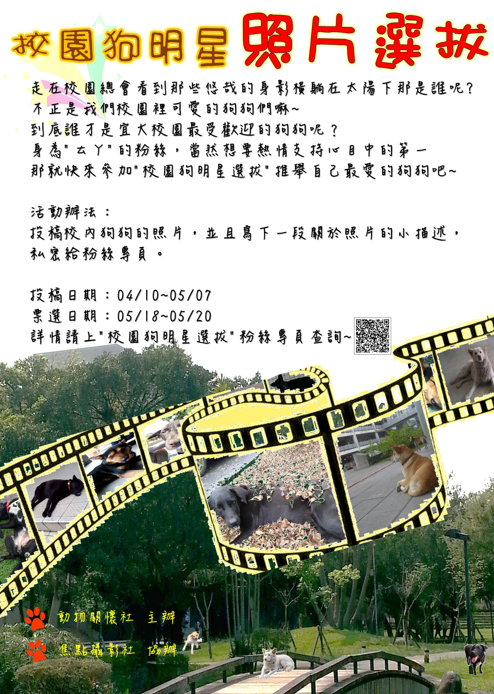

89th Anniversary Of National Ilan University
走在校園總會看到那些悠哉的身影橫躺在太陽下
那是誰呢?
不正是我們校園裡可愛的狗狗們嘛~
對於流浪狗的印象，可能是在街頭角落瑟縮著、四處向人乞食、受人唾棄等等…… 然而我們校內的狗狗卻深受師生民眾的的寵愛，肚子餓時，只要到校外晃一晃，校外的店家就會把ㄊㄚ們餵得肥滋滋的，整天慵懶地躺著，等著學生來摸摸，這悠閒的生活應該就是「流浪狗的小幸福」吧~~
說到「流浪狗的小幸福」，這不就是動懷社正舉辦的〈第二屆校園狗明星選拔〉的攝影主題嗎?大家想不想知道誰才是宜大校園最受歡迎的狗狗呢？身為"ㄊㄚ"的粉絲，當然想要支持心目中的第一，那就快來參加"校園狗明星選拔"推舉自己最愛的狗狗吧~
從投稿作品上傳至5/19 23:59前 可在「校園狗明星」粉絲專頁為支持的作品按讚
另外在05/18~05/20 在教穡110 動懷社將會進行狗狗照片的現場投票，為大家揭曉──誰，才是宜大最受歡迎的狗狗~
活動名稱 第二屆校園狗明星選拔
活動地點 國立宜蘭大學 教穡110 (05/18~05/20)
報名日期時間 活動日期時間 2015/04/10 08:00 ～ 2015/05/20 12:00
活動說明 活動是由相片徵稿方式，讓師生自行拍攝校園內留犬的照片，依主題附上對該照片的描述，並於校內開放投票，使全校師生、民眾能一齊參與此活動，增加活動親和力及趣味性。藉由此活動讓校內師生或附近民眾認識校內留犬，發現流浪犬的生活與處境，進而關注到流浪動物的議題，並使師生能更加仔細觀察留犬特徵，增加對留犬的識別度，有助於日後發生問題犬相關事件時能更準確告知本社。
報名人數 不限人數
候補人數 不限人數
主辦單位 國立宜蘭大學
動物關懷社 活動聯絡人 詹旻寰
聯絡人電話 0910751260
聯絡人E-Mail dreamalot357@gmail.com
活動相關網址 「校園狗明星選拔」 http://goo.gl/W62QcS

© 國立宜蘭大學課外活動組版權所有 參考設計 TEMPLATED